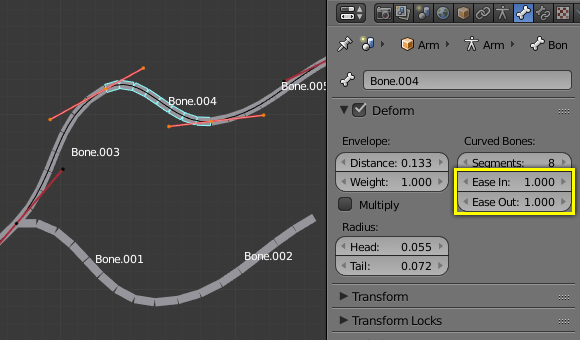

Гнуті Кістки -- Bendy Bones¶
Reference
| Mode: | All Modes |
|---|---|
| Panel: |
Bendy Bones (B-Bones) are an easy way to replace long chains of many small rigid bones. A common use case for curved bones is to model spine columns or facial bones.
Технічні деталі¶
Blender treats the bone as a section of a Bézier curve passing through the bones' joints. Each Segments will bend and roll them to follow this invisible curve representing a tessellated point of the Bézier curve. The control points at each end of the curve are the endpoints of the bone. The shape of the B-Bones can be controlled using a series of properties or indirectly through the neighboring bones (i.e. first child and parent). The properties construct handles on either end of the bone to control the curvature.
Коли Г-Кістка використовується як ціль для примусу, то Ідентифікатор даних --- Data ID пропонує опцію наслідування кривини.
Ghi chú
Однак, якщо така кістка використовується як звичайна ціль, а не для деформування геометрії, то вертіння не враховується.
Показ¶
Ви можете бачити ці сегменти такої кістки, тільки якщо увімкнено режим візуалізації «Г-Кістка» -- B-Bone.
When not visualized as B-Bones, bones are always shown as rigid sticks, even though the bone segments are still present and effective. This means that even in e.g. Octahedron visualization, if some bones in a chain have several segments, they will nonetheless smoothly deform their geometry...
Поза спокою¶
Початкова форма Г-Кістки може бути визначена у Режимі Правки -- Edit Mode як поза спокою -- rest pose такої кістки. Це корисно для вигнутих рис обличчя, як брови та рот.
Г-Кістки мають два набори властивостей на панелі «Гнуті Кістки» -- Bendy Bones -- один у Режимі Правки -- Edit Mode (тобто, базова оснастка/поза спокою) та інший у Режимі Пози -- Pose Mode -- що складають свої значення для отримання остаточних трансформацій.
Приклад¶

Старі Г-Кістки у Режимі Правки -- Edit Mode. ToDo. |

Крива Безьє накладена на ланцюг з її держаками, розміщеними у суглобах кісток. |

Та ж сама арматура у Режимі Об'єкта -- Object Mode. |
На Ілюстрації Старі Г-Кістки у Режимі Правки -- Edit Mode. ToDo. ми з'єднали три кістки, кожна з яких складається з п'яти сегментів.
Глянувши на Ілюстрацію Та ж сама арматура у Режимі Об'єкта -- Object Mode., ми можемо побачити, як сегменти цих кісток плавно «переходять» один в один, навіть при вертінні.
Арматура у Режимі Пози -- Pose Mode, візуалізація «B-Bone»: Bone.003 має один сегмент, Bone.004 має чотири, а Bone.005 має шістнадцять.
Опції -- Options¶
Сегменти -- Segments¶
Кнопка з числом «Сегменти» -- Segments дозволяє вам задавати кількість сегментів, на які дана кістка буде підподілена. Сегменти -- це дрібні, цільні, пов'язані між собою нащадкові кістки, що інтерпольовані між коренем та верхівкою. Чим вище ця устава, тим плавніше буде «гнутися» ця кістка, але і тим важче буде її обчислення...
XY Зсуви Кривої -- Curve XY Offsets¶
Applies an offsets the curve handle positions on the plane perpendicular to the bone's primary (Y) axis. As a result, the handle moves per axis (XY) further from its original location, causing the curve to bend.
Вертіння -- Roll¶
- Увід -- In, Вивід -- Out
- The roll value (or twisting around the main Y axis of the bone) is interpolated per segment, between the start and end roll values. It is applied as a rotational offsets on top of the previous rotation.
- Спадкувати Вертіння Кінця -- Inherit End Roll
- ToDo ~2.78.
Масштаб -- Scale¶
- Масштаб Уводу -- Scale In, Масштаб Виводу -- Scale Out
- Scaling factor that adjusts the thickness of each segment for X and Z axes only, i.e. length is not affected. Similar to Roll it is interpolated per segment.
Полегшення -- Easing¶
- Увід Легко -- Ease In, Вивід Легко -- Ease Out
Ці кнопки з числом Ease In/Out змінюють «довжину» авто -- "auto" держака Безьє для керування «держаком кореня» та «держаком верхівки» кістки, відповідно.
These values are proportional to the default length, which of course automatically varies depending on bone length, angle with the reference handle, and so on.

Подивіться на Bone.004: для неї задано стандартні значення (1.0) для устав Ease In та Ease Out. |
{kind=link}
{kind=link}
Власні орієнтири держаків¶
Г-Кістки можуть використовувати інші кістки як орієнтири для держаків замість використання предківської/нащадкових кісток. Для цього увімкніть стяг «Вжити Власні Орієнтири Держаків» -- Use Custom Reference Handles у Режимі Пози -- Pose Mode. Якщо у цих текстових полях нічого не визначено, то Г-Кістка буде використовувати взагалі тільки властивості з панелі Bendy Bones. Коли ця опція увімкнена, то будуть використовуватися тільки визначені тут інші кістки замість сусідів цієї кістки по ланцюгу.
- Відносно -- Relative
- Замість використання кінцевих точок цих кісток як абсолютних точок у 3D просторі, це обчислює, як далеко переміщена орієнтувальна кістка від їх позиції спокою. Далі застосовуються дельта трансформацій до власних кінцевих точок кістки для отримання локації держака. Це корисно, якщо власна керувальна орієнтирна кістка є надто далеко від її держака.
Mẹo
Набір Ключування
Набір Ключування -- Keying Set «Форми Г-Кістки» включає усі властивості з панелі Bendy Bones.
Приклад¶
Візуалізація властивостей Гнутих Кісток.